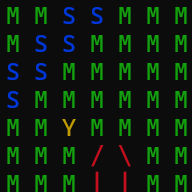

Hi, I'm RandomNari and i like programming my own games and making mods for minecraft. I also in general like software related projects and want to learn a bit about hardware too.
Something I am making right now is a game that you can fully play in the terminal window and is built from scratch with c++. There, the player's choices matter and multiple playthroughs are needed to acually play though the game since you keep getting information you can later use to get a different ending.
